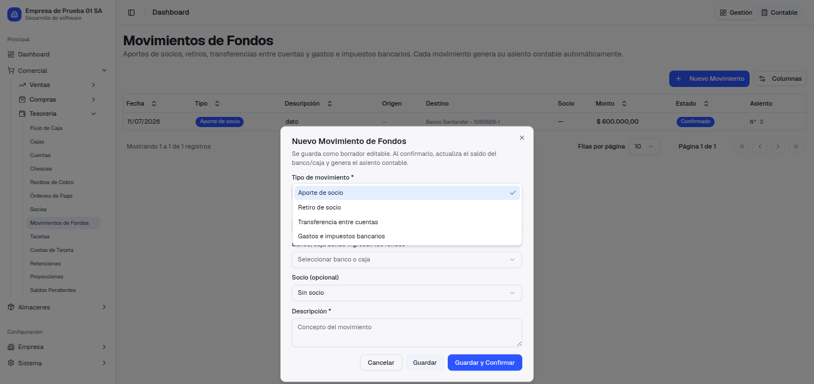
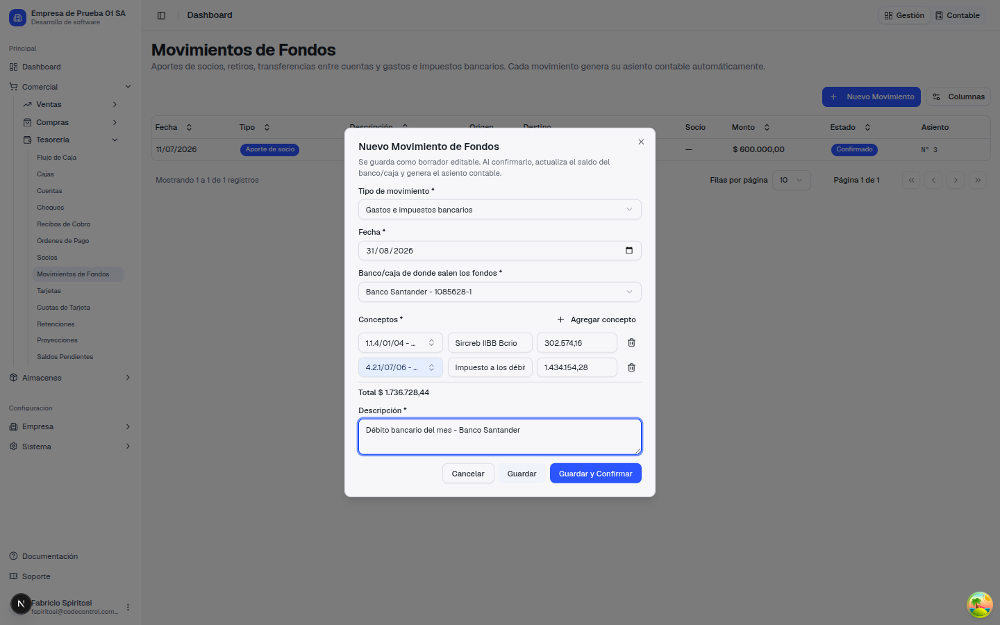
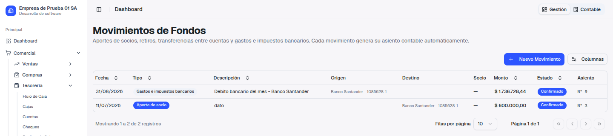
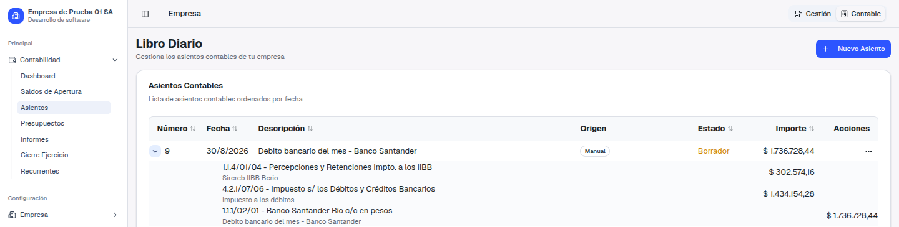

Guía de presentación — qué pedías, qué cambió y cómo usarlo
Nos pasaste el resumen de Bejerman de cómo veníamos cargando el débito bancario del mes: un solo movimiento de fondos, con todos los conceptos sumados en un único importe.
El resumen bancario de un mes suele traer conceptos muy distintos entre sí — Sircreb, impuesto a los débitos y créditos, comisiones, IVA sobre esas comisiones — y hasta ahora todo eso se cargaba junto, como un solo número, sin poder saber cuánto correspondía a cada cuenta contable.
Al mirar el resumen bancario en detalle, los conceptos se dividen en dos grupos que la contabilidad tiene que tratar distinto: los que no llevan IVA (impuestos, retenciones) y los que sí llevan IVA (comisiones y otros servicios con comprobante fiscal). Por eso el ticket se resolvió en dos entregas independientes, y cada una vive en un lugar distinto del sistema:
| Conceptos sin IVA (Sircreb, imp. a los débitos, retenciones) |
Conceptos con IVA (comisiones, servicios bancarios facturados) |
|---|---|
| Se cargan en Tesorería → Movimientos de Fondos, con el tipo "Gastos e impuestos bancarios" y un concepto por cada ítem del resumen. Es la parte de esta guía, con capturas reales. | Se cargan en Compras → Facturas de Compra, como una factura con el banco como proveedor y el tipo de comprobante "Gastos Bancarios", para poder computar el IVA. Esta forma ya se entregó antes: acá se explica en texto, sin capturas nuevas. |
La pregunta que conviene hacerse frente a cada línea del resumen es siempre la misma: ¿este concepto tiene IVA discriminado? Si no lo tiene, va como movimiento de fondos. Si lo tiene, va como factura de compra. Un mismo resumen bancario del mes puede terminar necesitando las dos cosas: por un lado el movimiento de fondos con los impuestos y retenciones, por otro la factura de compra con las comisiones que sí llevan IVA.
El movimiento de fondos tenía un único campo de monto. Para cargar el débito del mes había que sumar a mano todos los conceptos del resumen y cargar un solo número, sin poder saber después cuánto correspondía a Sircreb, cuánto al impuesto a los débitos, etc. El asiento generado tampoco lo distinguía: todo iba a una única cuenta.
Hay un tipo de movimiento nuevo, "Gastos e impuestos bancarios", con una tabla de conceptos: agregás una fila por cada ítem del resumen, cada una con su propia cuenta contable, su descripción y su importe. El total se calcula solo, sumando los conceptos, y el asiento sale con un débito por cada uno.
Vamos a cargar el mismo caso que nos mandaste: el débito bancario del mes de Banco Santander, con dos conceptos — Sircreb IIBB Bcrio por $302.574,16 e Impuesto a los débitos por $1.434.154,28 — que suman exactamente $1.736.728,44.




Al elegir la cuenta de un concepto, solo aparecen cuentas imputables (de hoja, activas) de tipo egreso o activo. Tiene sentido: Sircreb es una retención que se descuenta más adelante de otro impuesto (por eso va a una cuenta de activo, como un crédito a favor), mientras que el impuesto a los débitos y créditos es un gasto real (va a una cuenta de egreso). Las cuentas de pasivo y patrimonio no aparecen, porque un débito bancario nunca tiene esas cuentas como contrapartida.
El movimiento necesita al menos un concepto para poder guardarse: no se puede confirmar un "Gastos e impuestos bancarios" sin ninguna fila cargada. Mientras está en borrador podés agregar, editar o quitar conceptos las veces que haga falta; una vez confirmado, como con cualquier movimiento, ya no se edita.
La confusión más común va a ser mezclar las dos formas dentro de un mismo concepto. Para no dudar al mirar el resumen bancario del mes, repasá cada línea con esta pregunta: ¿discrimina IVA?
Si un mismo resumen trae los dos tipos de conceptos, se cargan por separado: el movimiento de fondos con lo que no lleva IVA, y la factura de compra con lo que sí.